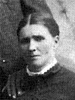
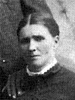
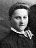
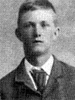
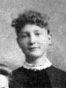

The Family of Christian and Ane Catherine Christensen Anderson
Home
Histories
Charts
Photos
Maps
Restricted
News
Info
Contact
| <--(return)-- |    | Jens Andersen and Ane Pedersen Anderson |
----> |   
| Christian Anderson Born 3 OCT 1855 Died 6 MAY 1925 and Ane Cathrine Christensen 25 APR 1851 - 26 OCT 1940 Married 17 Apr. 1871 Ane Cathrine also married Joseph Smith Andersen 6 Mar. 1879
|
|  |
Annie Boletta Christina Anderson Born 20 JAN 1872 Oak City,Millard,Utah,USA Died 2 JUN 1951 Oak City,Millard,Utah,USA The 1st child of Christian Anderson and Ane Cathrine Christensen |
 |
Jens Christian Anderson Born 16 JUL 1874 Oak City,Millard,Utah,USA Died 24 DEC 1929 Salt Lake City,Salt Lake,Utah,USA The 2nd child of Christian Anderson and Ane Cathrine Christensen |
 |
Christiana Anderson Born 7 DEC 1876 Oak City,Millard,Utah,USA Died 26 JAN 1952 Provo,Utah,Utah,USA The 3rd child of Christian Anderson and Ane Cathrine Christensen |